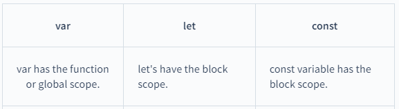

Before we get find out the scope type of let and var and const in javascript, let us learn some of the differences between function-scope and block-scope:
Scope stands for where our variable will be available to use inside our code and where it will not.
Let's take an example to understand it -
In the example, we have a function myFun(); inside the function, we declare a variable myName and
print
the variable myName on the console.
When we call our function myFun it successfully prints the value of variable myName on the console,
but
when we try to print the variable myName outside the function, it throws referenceError because
variable
myName has a function scope that's why it's not accessible outside the function.
Variable having Function-scope means variable will only be available to use inside the function it
declared, will not be accessible outside of function, and will give Reference Error if we try to
access.
Here is an example -
In the example, we make a function name() then we declare a variablemyAge inside the function, when we call the function, it prints the myAge variable on the console, But when we try to access the variable outside the function, it's throwing a Reference Error.
Block means a pair of curly brackets, a block can be anything that contains an opening and closing
curly
bracket.
Variable having Block-scope will only be available to use inside the block it declared, will not be
accessible outside the block, and will give Reference Error if we try to access.
Here is an example -
In the example above, we have an if block with a true condition, and inside the if block, we declare a variable name myName. Now when we try to print the myName variable to the console, it prints successfully, but when we try to print the variable outside the if block, we get a Reference Error.
scope of var, let & const are shown in a table below:
JavaScript uses null and undefined to represent missing or empty values, but they are used in different contexts and for different purposes. Here are the primary use cases for each:
1. Explicitly Indicating Absence of Value: You can assign 'null' to a variable or property to explicitly indicate that it has no value or that it is empty.
2. As a Placeholder for Future Values: You might use 'null' as a temporary placeholder for a variable or property that will have a value assigned to it later.
3. To Remove an Object Property: Setting a property of an object to 'null' can be used to remove that property from the object.
4. Clearing Object References: You can set an object reference to 'null' when you no longer need it. This can be helpful for memory management, as it allows the JavaScript engine's garbage collector to reclaim memory used by the object.
5. Default Values: You can use 'null' as a default value in functions or expressions where you want to indicate that a value should be provided or initialized later.
6. Array Initialization: You can use 'null' to initialize an array where certain elements are intentionally empty or not yet defined.
1. Default Value for Function Parameters: If a function parameter is not provided when the function is called, it defaults to undefined. You can use this to check if an argument was passed.
2. Variable Declarations Without Initialization: Variables declared but not assigned a value are automatically initialized to undefined.
3. Return Value of Functions: If a function doesn't explicitly return a value, it returns undefined.
4. Properties That Don't Exist: If you try to access an object property that doesn't exist, it returns undefined.
5. Testing for the Existence of Properties: You can use undefined to check if a property exists within an object without triggering a "property not found" error.
6. Optional Function Arguments: When defining functions with optional parameters, you can check if a parameter is undefined to provide a default behavior.
Let's break down REST API in an easy way that we can grasp:
A REST API, or Representational State Transfer Application Programming Interface, is a way for different software applications to communicate and exchange data with each other over the internet. It's like a menu in a restaurant: you can see what dishes are available (the endpoints), order what you want (make requests), and get your food (receive data) in a standard and predictable way.
1. Resources: In the context of REST, resources are like items on the restaurant menu. They are the things you want to interact with, such as users, products, or articles.
2. HTTP Methods: REST APIs use standard HTTP methods to perform actions on resources. The most common methods are:
3. Endpoints: Endpoints are the URLs (Uniform Resource Locators) that represent resources on the API. Think of them as the addresses to access specific items on the menu.
4. Stateless: REST is stateless, which means each request from a client to a server must contain all the information needed to understand and fulfill the request. It's like each order at a restaurant doesn't rely on previous orders; it includes all the details.
5. JSON (or XML) Data: Data exchanged between the client and server is often in a format called JSON (JavaScript Object Notation) or XML (eXtensible Markup Language). JSON is like the language both the restaurant and the customer understand.